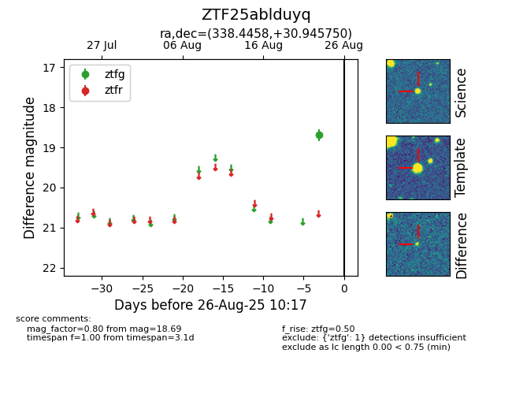

Target ZTF25ablduyq at 2025-08-26 10:17, see:
FINK: fink-portal.org/ZTF25ablduyq
Lasair: lasair-ztf.lsst.ac.uk/objects/ZTF25ablduyq
ALeRCE: alerce.online/object/ZTF25ablduyq
alt names
ZTF25ablduyq (ztf,fink)
coordinates:
equatorial (ra, dec) = (338.4458,+30.94575)
galactic (l, b) = (91.0833,-23.28028)
photometry
last ztfg=18.69
1 ztfg detections
